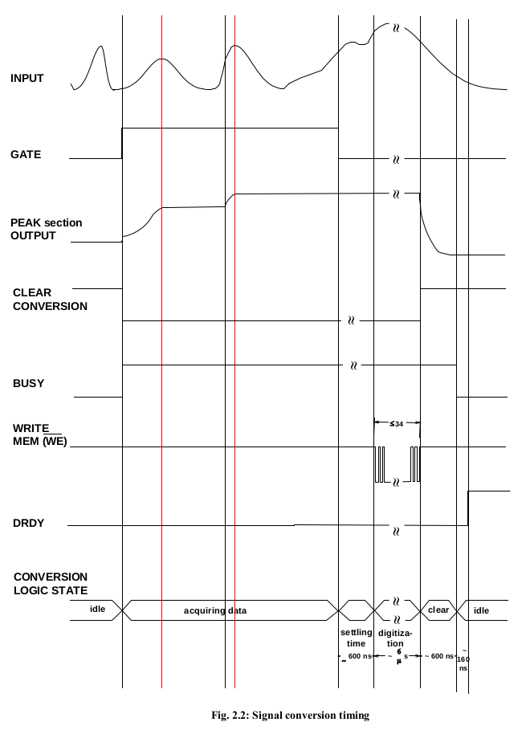
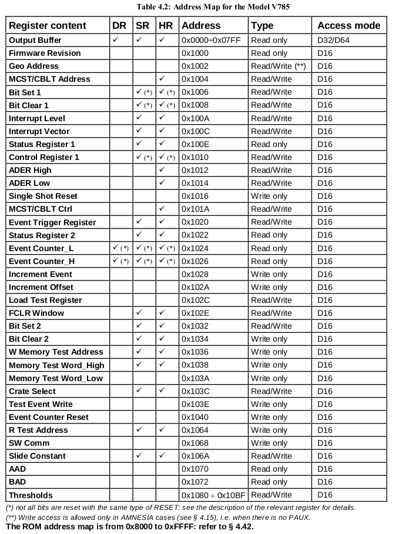
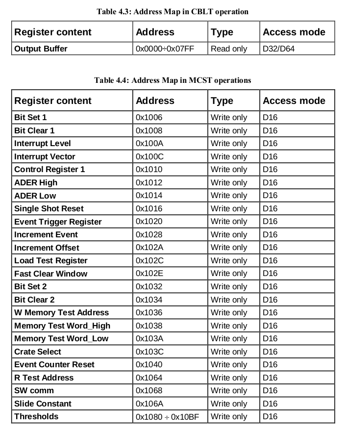
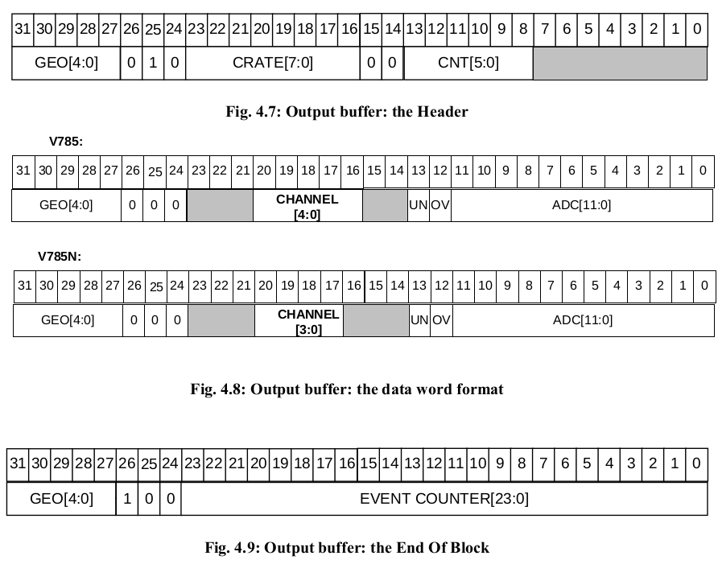
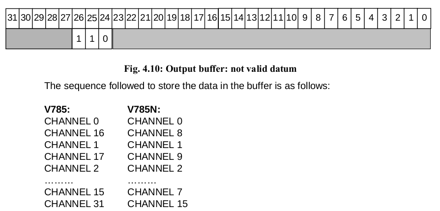
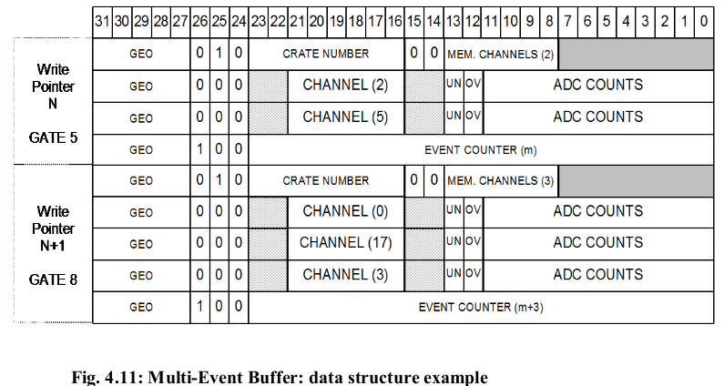

V785 32Channel Multievent Peak Sensing ADC
说明书 V785
- High channel density
- 12-bit resolution(4096 channels)
- 5.7 us/32 ch conversion time
- 600 ns fast clear time
- Zero and overflow suppression for each channel
- ±1.5% differential non linearity
- ±0.1% integral non linearity
- 32 event buffer memory
- BLT32/MBLT64/CBLT32/CBLT64 data transfer
- Multicast commands
- Input voltage range is 0 - 4 V



Output Buffer
(Base Address + 0x0000 ÷ 0x07FC, read only)
This register allows the User to access the Multiple Event Buffer to readout the converted values.
The output buffer contains the output data organised in 32-bit words.
The data in the buffer are organised in events. Each event consists of:
- the header, that contains the geographical address, the crate number and the number of converted channels;
- one or more data words, each of which contains the geographical address, the number of the channel, the Under-Threshold (UN) bit, the Overflow (OV) bit and the 12-bit converted value;
- the End Of Block (EOB), which contains the geographical address and the event counter.

Header content:
- The bits[31...27] contains the GEO address.
- The bits[26..24] identify the type of word (010 -> header);
- The bits[23..16] identify the crate number according to the content of the Crate Select Register .
- The bits[13...8] contain the number of memorised channels.
Datum content:
- The bits[31...27] contains the GEO address.
- The bits[26..24] identify the type of word (000 -> datum);
- The bits[20..16] (bits[20..17] in the V785 N) identify the number of the channel which the data are coming from.
- The bit[13] is the UNDERTHRESHOLD bit:
- = 0 -> the datum is over the threshold fixed in the relevant register ;
- = 1 -> the datum is under the threshold fixed in the relevant register; it is actually possible to make the datum be written in the buffer even if it is under the threshold by using the bits 3 and 4 of the Bit Set 2 Register;
- The bit[12] is the OVERFLOW bit:
- = 0 -> ADC not in overflow condition;
- = 1 -> ADC in overflow;
- The bits[11...0] contain the converted datum.
EOB content:
- The bits[31...27] contains the GEO address.
- The bits[26..24] identify the type of word (100 -> EOB);
- The bits[23..0] contain the 24-bit event counter value.
The bits[31...27] always contains the GEO address (except for the not valid datum.
The bits[26..24] identify the type of word, according to the following:
- 010 -> header;
- 000 -> valid datum;
- 100 -> end of block;
- 110 -> not valid datum.
- others -> reserved.
If a read access is performed to the buffer when it is empty, the readout will provide a NOT VALID DATUM arranged as shown in Fig. 4.10.

Please note that some of the above channel data may be missing in the sequence: this is due either to overflow or under threshold conditions (which caused these data not to be stored), or to User’s settings to kill some channels. Fig. 4.11 shows an example of the Multi-Event Buffer structure in case of zero suppression enabled and with event counter set so as to count all events.The first event written in the active Event Buffer (Write pointer = n) is that relative to the GATE n.5 during which two channels (2 and 5) were over the programmed threshold: the stored event is constituted by a Header, the data relative to the two channels and the End of Block word at the end of all converted data of the relevant Event. During GATE n.6 and n. 7 no channels were in the selected range. The next event written in the following active Event Buffer (Write pointer = n+1) is that relative to the GATE n.8: it consists of the Header, the data relative to three channels (0, 17 and 3) and the End of Block word at the end of all converted data.

N.B.: in the versions which do not have the PAUX connector, the GEO address must be written by the User via a write access to the relevant register (see § 4.9). If this operation is not performed, it will be not possible to identify which module the data are coming from when the CBLT access is used.